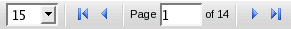

| Table navigation |
use controls  on the bottom of the table |
| Table height |
left-click on the bottom edge of the table and drag it up or down |
| Table refresh |
click  on the bottom of the table on the bottom of the table |
| Table Filter |
click  on the bottom of the table and use controls to (1) select table field to filter, (2) enter filter value and
(3) press Enter. For subsystems enter GOOD or BAD value.
on the bottom of the table and use controls to (1) select table field to filter, (2) enter filter value and
(3) press Enter. For subsystems enter GOOD or BAD value. |
| Resize table columns |
left-click on the column edge in table header and drag it left or right |
| Add/remove table columns |
Hover mouse over any table column header, left-click on down arrow and select/unselect table columns |
| Sort table rows |
Left-click on table column header |
| Automatic refresh |
click on the top of the table to toggle on/off autorefresh.
Records will be autorefreshed each minute. |
| Table reset |
If table layout was destroyed click on Reset button to start it over |
| Edit/View Record |
Click on Edit button on the top of the page or doubleclick on the record. Record information will be shown
with edit or read-only controls according to user/working place rights. |
| All Runs/Run Registry Data |
To toggle between All Run and Run Registry Data click on appropriate button on the top of the table |
| Versioning/tags |
To expand and see all Run versions click on |
| Dump Data |
Top right button ’Dump Data’ gives a possibility to dump
run data in one of the formats: ELOG (copy and paste to ELOG for
reference), Twiki (copy and paste to twiki as a table), Text CVS (save as
file and open as spreadsheet), Text TSV (copy and paste as spreadsheet),
XML (for integration to other applications). |
| Edit Runs |
To edit Runs user must have appropriate working place certificate installed and must be logged in by using NICE account. |
| More information |
For more information how to use CMS DQM Run Registry
please read this tutorial |